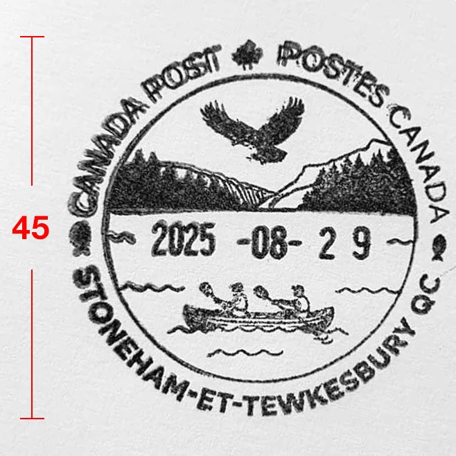

BP Stoneham-et-Tewkesbury pictorial cancel
Scenery at the Jacques-Cartier National Park: osprey, Laurentian mountains, forest, canoeing
- Status
- Active
- Run dates
- 2025-01-01 to present
- Design
- scenery at the Jacques-Cartier National Park: osprey, Laurentian mountains, forest, canoeing
- Ink colour
- Black
- Designer
- Unknown
- Post office
- BP Stoneham-et-Tewkesbury
124 1ere AV, Suite 100
Stoneham-et-Tewkesbury, QC
G3C 1A0 - Subjects
- canoeing, water sport, eagle, osprey, bird of prey, animal, forest, national park, mountain, nature
- Notes
- According to Caroline, who works at Jacques-Cartier National Park and came up with this cancel concept, the bird is meant to be an osprey, though it can be taken for an eagle — both are seen in the park.
Collect it by mail. Send your stamped covers, with a stamped return envelope, to the post office address above (check the notes first). How to collect pictorial cancels by mail · en français
 BP Québec Haute-VilleHaunted Canada
BP Québec Haute-VilleHaunted Canada BP Québec Haute-VilleChâteau
BP Québec Haute-VilleChâteau BP Québec Haute-VillePost office
BP Québec Haute-VillePost office BP Québec Haute-VilleBNAPS 2018
BP Québec Haute-VilleBNAPS 2018 BP Québec Haute-VilleCarnaval
BP Québec Haute-VilleCarnaval BP Québec Haute-VilleBasilica
BP Québec Haute-VilleBasilica